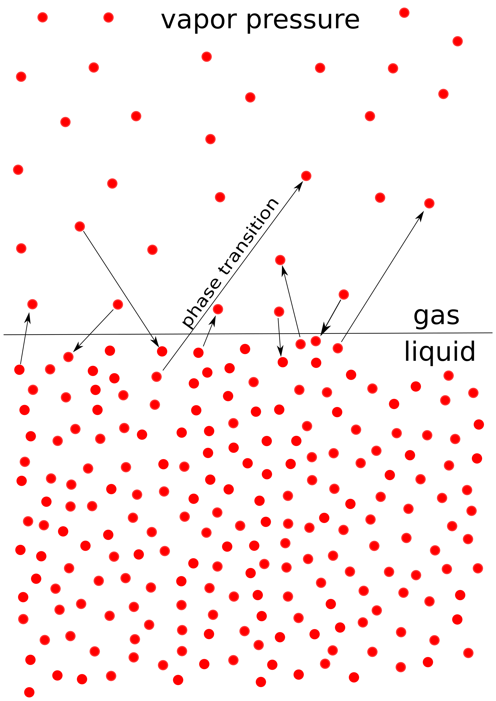

So far when we've talked about phases, we've assumed that the phases just exist by themselves. In reality, phases exist in a equilibrium. For example, a liquid doesn't just exist as a liquid.
In reality, there will be small amounts of gas evaporating from the liquid at all times, as seen in the image. After some point, the liquid and gas will be in equilibrium when the rate of gas evaporating is the same as the rate of gas undergoing condensation. The pressure of the gases at this equilibrium point is called the vapor pressure which varies with temperature and is unique for each liquid.
Imagine that you had an sealed glass of water that exists solely as liquid water, no vapor (yet). According to this, the molecules on the surface of water are going to evaporate and bounce around the sealed glass. Some of the gas will eventually return to liquid (condensate) when it collides with the surface, but initially, more gas is evaporating than condensing. Over time, the rates of evaporation and condensation will be the same. We call this point the phase equilibrium. The pressure of the gas at this time is called the vapor pressure.
This is why liquids evaporate when left in an unsealed environment. In a sealed environment, there is gas condensing back into the liquid state- thus, there is no net loss. In an open environment, such as an uncovered mug or a bowl, the liquid will evaporate but, without gas recolliding with the surface and condensing, the liquid will just continue to evaporate until none of it is left.
The relationship between vapor pressure and temperature is given by the Clausius-Clapeyron Equation:
`ln(P_2/P_1)=(-DeltaH_"vap"°)/R(1/T_2-1/T_1)`
`T_1` = initial temperature in `K`
`T_2` = final temperature in `K`
`P_1` = initial pressure in `"atm"`
`P_2` = final pressure in `"atm"`
`DeltaH_"vap"°` = enthalpy of vaporization in `(kJ)/"mol"`
`R` = ideal gas constant, `(0.08206 L*"atm")/("mol"*K)`
If logarithms intimidate you, take some time to review them. They're not terribly difficult:
The Clausius-Clapeyron equation tells us the relationship between vapor pressure and temperature. Notice that the relationship between temperature and pressure is based on a logarithmic scale. This means that, as temperature is increased, the vapor pressure increases exponentially. This makes sense if you think about it: water at low temperatures is mostly in the liquid state. As you continue to increase the temperature of water, more and more of the liquid is going to evaporate to become a gas.
Just like there are ideal gases, there are ideal solutions. What happens to the partial pressure of an ideal solution when a solute is introduced?
For ideal solutions, the partial pressure of the solute follows Raoult's Law
`P_i=x_iP_("pure")`
`P_i` is the pressure of `i`, where `i` is any component
`x_i` is the mole fraction of component `i`
`P_("pure")` is the pressure of `i` when `i` is a pure solution.
Notice any similarities with Dalton's Law of Partial Pressure? Dalton's Law states that the partial pressure of a specific gas in a gas solution is equal to the mole fraction of the gas multiplied by the total pressure of the gas:
`P_i=x_iP_"total"`
Just as Dalton's Law only applies for ideal gases, Raoult's Law only applies for ideal solutions. Raoult's Law tells us the partial pressure of each individual component in a system.
Consider a pure system of water. The mole fraction of water is 1 since the system is just water. This means that the partial pressure of water is calculated as:
`P_("water")=(1)(P_("water"))= P_("water")`
This is exactly what we expect! Now let's say that we had a solution that had the mole fraction of water at 0.75 and the mole fraction of a solvent `A` at 0.25. What would the partial pressures of water and `A` be?
The calculations are simple:
`P_("water in solution")=(0.75)(P_("water"))= P_("water")=0.75P_("water")`
`P_("A in solution")=(0.25)(P_A)=0.25P_A`
This means that the pressure of the solution is going to be 75% of the normal pressure of water combined with 25% the regular pressure of A:
`P_("solution")=P_("water in solution")+P_("A in solution")`
`P_("solution")=0.75P_("water")+0.25P_A`
With Raoult's Law, we can calculate the total pressure of a solution by summing the individual contribution to the pressure by the different components.
Henry's Law states that the amount of gas dissolved in solution is proportional to the partial pressure of the gas. In mathematical form, this is written as:
`C=k_HP`
`C` is the amount of gas dissolved in solution.
`P` is the partial pressure of the gas
`k_H` is the Henry's Law constant in `M/("atm)` and varies for each gas.
Henry's Law explains why soda becomes "flat" after being opened. When soda is sealed, carbon dioxide gas is sealed alongside it at a high pressure. This means that the partial pressure of `CO_2` is high and thus the amount of `CO_2` dissolved within the soda is high. After opening, the partial pressure of `CO_2` decreases as the gas molecules are no longer confined to the can. This means that the amount of `CO_2` dissolved within the soda will decrease proportionally.
Phases exist in equilibrium with each other. A phase is never just by itself.
The vapor pressure of a gas is the pressure of the gas at the equilibrium between condensation and evaporation.
The Clausius-Clapeyron equation gives the relationship between vapor pressure and temperature. The relationship is logarithmic, meaning that as temperature increases, the vapor pressure increases exponentially.
Raoult's Law states that the partial pressure of each component in a solution is equal to the mole fraction of that component multiplied by the pressure of the pure solution.
Henry's Law states that the amount of gas dissolved in solution is proportional to the partial pressure of the gas.
1. What's the deal with high or low vapor pressures?
A high vapor pressure indicates that a lot of the solution is present in the gaseous state. Conversely a low vapor pressure indicates that very little of the solution is present in the gaseous state.
Solutions with high vapor pressures are called "volatile" solutions. This is because the solutions will evaporate very quickly. Hand sanitizer is an example of a volatile solution: once applied, it will evaporate off in a matter of seconds. Liquid mercury is an example of a non-volatile solution: liquid mercury will take a very long time to evaporate away.
For comparison, the vapor pressure of ethanol, the primary ingredient in hand sanitizer, has a vapor pressure of `5950 Pa`. Liquid mercury has a vapor pressure of approximately `0.8 Pa` at the same temperature.
2. What's an ideal solution?
An ideal solution is one that has `DeltaH_"mixing"=0`. This means that, as you mix the solutes into the solvent, no heat will be released or absorbed. In reality, mixing will always either release or consume some heat due to chemical reactions. The closer to 0 the `DeltaH_"mixing"` is, the more ideal the solution is.